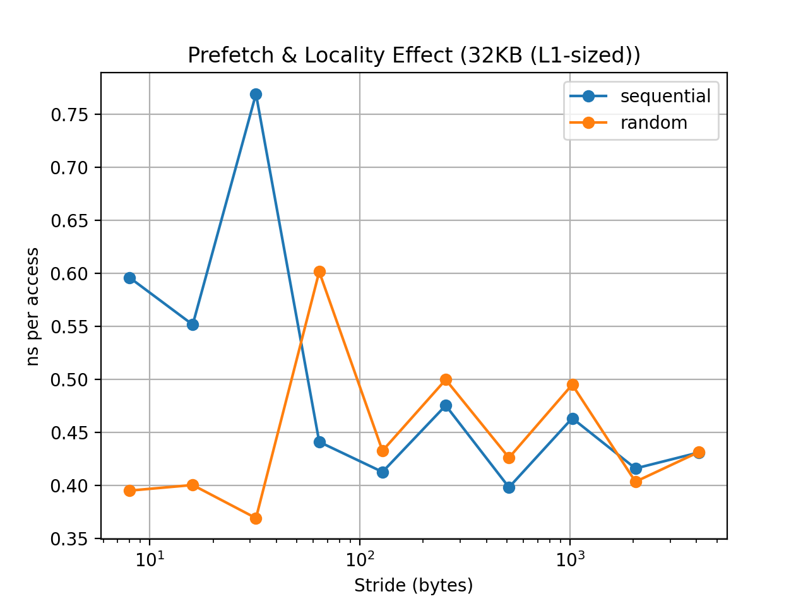
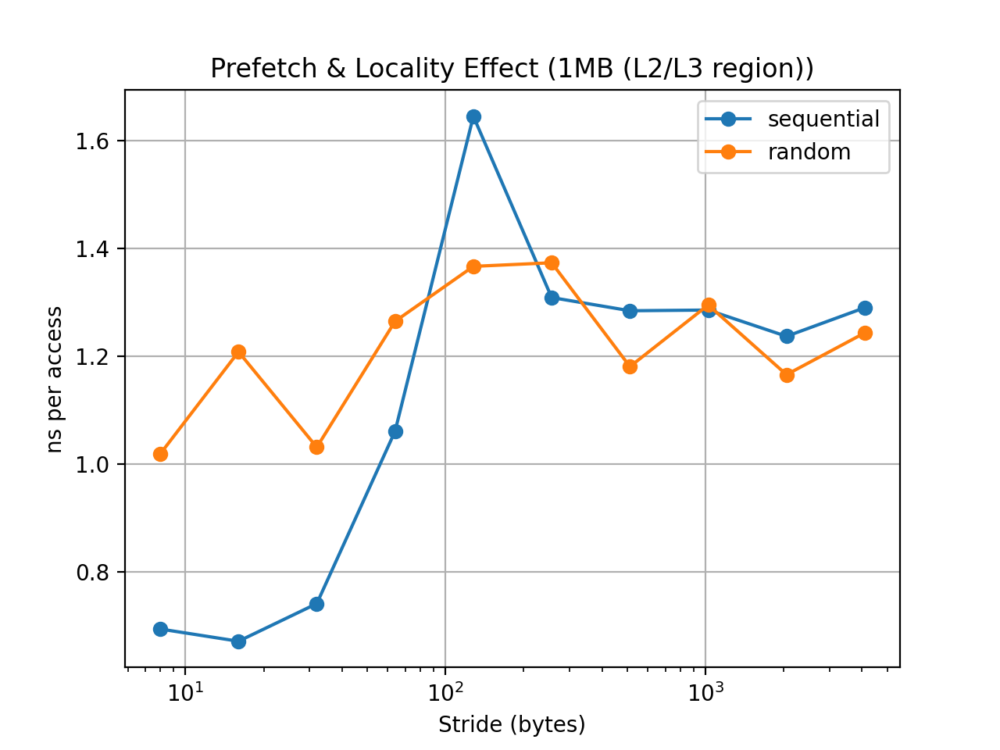
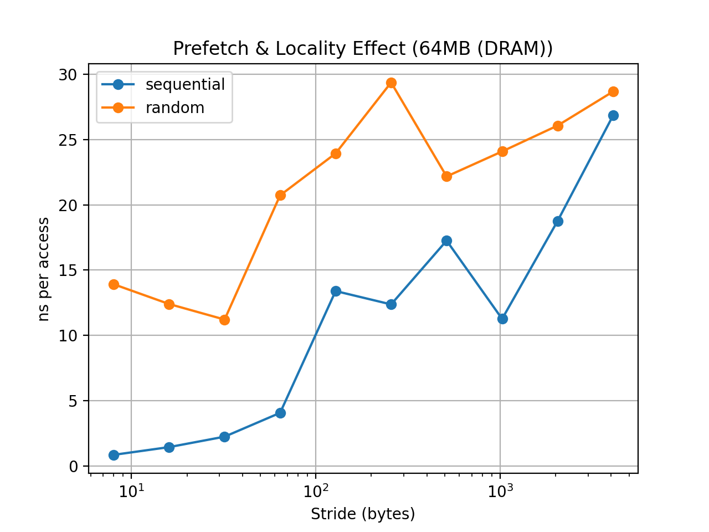

03-prefetch-and-locality¶
Modern CPUs rely heavily on spatial locality and hardware prefetching to hide memory latency.
This experiment demonstrates how memory access patterns influence performance even when the total number of memory loads is identical.
We compare two traversal patterns:
- Sequential traversal
- Random traversal
Both patterns access the same memory locations, but in different orders.
Experiment Setup¶
The benchmark iterates over a large array while varying:
- working set size
- stride size
- access order
Working set sizes:
| Size | Region |
|---|---|
| 32KB | L1-sized |
| 1MB | L2/L3 region |
| 64MB | DRAM |
Stride sizes:
8B → 4096B
Each configuration performs approximately 64 million memory accesses.
Metrics reported:
- ns per access
- useful MiB/s
Results¶
L1-sized dataset (32KB)¶

Observation¶
Latency remains extremely low across all stride sizes.
Sequential and random access perform almost identically.
Explanation¶
Because the dataset fits entirely inside L1 cache, most accesses are served from the fastest level of the memory hierarchy.
In this regime:
memory access pattern has little effect
Latency is dominated by L1 cache access time rather than DRAM latency.
L2/L3 region (1MB)¶

Observation¶
Sequential traversal begins to outperform random access.
Latency gradually increases as stride grows.
Explanation¶
Once the dataset exceeds L1 capacity:
- cache-line reuse becomes important
- hardware prefetchers begin to matter
Sequential traversal produces predictable access patterns that prefetchers can follow.
Random access breaks that predictability and increases cache misses.
DRAM-scale dataset (64MB)¶

This working set exceeds the last-level cache and therefore reflects main memory behavior.
Selected measurements:
| Stride | Seq (ns/access) | Random (ns/access) |
|---|---|---|
| 8B | 0.84 | 13.91 |
| 16B | 1.43 | 12.39 |
| 32B | 2.23 | 11.20 |
| 64B | 4.05 | 20.72 |
| 128B | 13.39 | 23.93 |
| 256B | 12.36 | 29.37 |
| 512B | 17.26 | 22.17 |
| 1024B | 11.26 | 24.09 |
| 2048B | 18.77 | 26.07 |
| 4096B | 26.85 | 28.68 |
Key observations¶
Sequential access is dramatically faster for small strides.
Example:
stride = 8B
sequential : 0.84 ns
random : 13.91 ns
This is roughly a 16× difference.
Why Sequential Access Is Faster¶
Spatial locality¶
Modern CPUs fetch memory in cache-line units (typically 64 bytes).
Sequential traversal reuses most of each cache line:
A[i], A[i+1], A[i+2] ...
Random access often wastes most of the fetched cache line.
Hardware prefetching¶
CPUs detect predictable access patterns.
When accesses follow a regular pattern such as:
A[i]
A[i + stride]
A[i + 2*stride]
the hardware prefetcher can fetch future cache lines in advance.
Random access destroys this predictability.
Interpreting the Irregularities¶
The sequential latency curve is not perfectly monotonic.
Examples from the data:
stride=128B → 13.39 ns
stride=256B → 12.36 ns
stride=1024B → 11.26 ns
These small fluctuations are expected.
Several microarchitectural effects can cause this.
Stride-aware hardware prefetchers¶
Modern CPUs include stride-detecting prefetchers.
Some stride values may trigger more effective prefetching than others.
Memory-Level Parallelism (MLP)¶
Out-of-order CPUs can overlap multiple outstanding memory requests.
Even when individual loads are slow, several can be processed concurrently.
DRAM row buffer behavior¶
DRAM is organized around row buffers.
Accesses that fall within the same DRAM row may experience slightly lower latency.
Bandwidth Perspective¶
The bandwidth metric highlights the same effect.
Example results:
| Stride | Seq (MiB/s) | Random (MiB/s) |
|---|---|---|
| 8B | 9096 | 548 |
| 16B | 5323 | 615 |
| 64B | 1880 | 368 |
| 128B | 569 | 318 |
Sequential traversal achieves dramatically higher bandwidth because each fetched cache line is used efficiently.
Random traversal wastes most of the data fetched from memory.
Key Takeaways¶
1. Sequential traversal is critical for performance
Predictable access patterns allow hardware prefetchers to hide memory latency.
2. Random access exposes true memory latency
Without predictable patterns, most loads behave like cache misses.
3. Stride determines cache-line efficiency
Large strides waste bandwidth and reduce effective throughput.
Final Insight¶
This experiment highlights an important systems principle:
algorithm complexity
≠
memory performance
Two algorithms performing the same number of loads can exhibit an order-of-magnitude performance difference purely due to memory access patterns.
Understanding locality and prefetch behavior is therefore essential for designing high-performance systems and data structures.